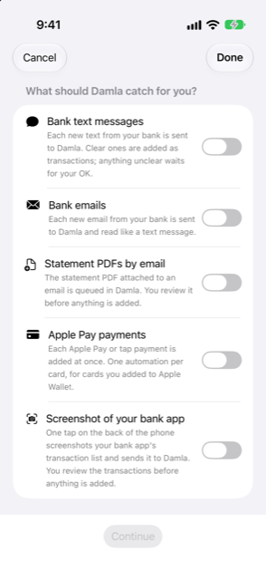

Guide › Automatic capture
The automation setup wizard
Settings > Automations > Set up step by step.
The setup wizard walks you through making the Shortcuts automations that feed Damla, one kind of capture at a time, and then watches for your first real alert to confirm it works. iOS does not let an app create automations, so you make each automation once, by hand, in the Shortcuts app, and the wizard guides you through each step and checks the result.

When to use it
- You are setting up Damla and want its automatic capture working, with the exact steps laid out for you.
- You want to add one more kind of capture — say, bank emails — and need the exact steps for it.
- An automation you made by hand never worked, and you want to redo it with the steps in front of you.
Step by step
- Open Settings, then Bank messages and statements, then Automations (Shortcuts), and tap Set up step by step.
- On the first page, What should Damla catch for you?, turn on what you want. Each choice has a one-line explanation under it:
- Bank text messages — each new text from your bank is sent to Damla; clear ones are added as transactions, and anything unclear waits for your OK. - Bank emails — each new email from your bank is sent to Damla and read like a text message. - Statement PDFs by email — the PDF attached to an email is queued in Damla, and you review it before anything is added. - Apple Pay payments — each Apple Pay or tap payment is added at once; one automation per card, for cards you added to Apple Wallet. - Screenshot of your bank app — one tap on the back of the phone screenshots your bank app's transaction list and sends it to Damla; you review the transactions before anything is added.
- Tap Continue. Each kind you chose gets its own page, in turn.
- On each page, type the sender at the top and tap Save, when the kind needs one: a sender name or number for bank texts; a sender email address (or part of it) for bank emails and statement PDFs; the last 4 digits of the card for Apple Pay. The screenshot kind needs no sender. The field starts with the first sender already saved for that kind, if there is one.
- Read the numbered steps for the Shortcuts app on the same page. You can select and copy the text of each step.
- Tap Open the Shortcuts app and follow the steps there. Or tap Copy the Apple Intelligence prompt and paste the prompt into the Shortcuts app's Apple Intelligence, to have it build the automation for you. The button says Copied once the prompt is on the clipboard.
- Tap Next to go on to the next kind, or Back to correct the one before.
- The last page is Test it. Send yourself a test: have the automation fire once, with a real text, email or payment from that sender, or run the shortcut.
- The page shows Waiting for the first alert… until something arrives while you are on it, then a green tick with what Damla received and the words You're set. Tap Done. Not near your bank? Tap I'll test it later and test when it suits you.
If nothing arrives
- The Is it working? section on the Automations screen says whether anything has reached Damla yet, and when the last bank message arrived.
- After you set one up, send yourself a test message. If it does not show in Recent alerts within a minute, the automation is not running: check that it is set to Run Immediately.
- A statement or a screenshot does not appear in Recent alerts — it waits for review instead. The wizard watches that queue too, and tells you when a statement has arrived to review.
Good to know
- The wizard itself creates nothing in Shortcuts. It saves the senders you type, shows the steps and checks for the first alert. You make the automation once, in the Shortcuts app.
- The steps and the prompt are the same ones shown on the Automations screen, where you can also copy the steps as text and copy a sender.
- Cancel and Done close the wizard. The senders you saved along the way stay saved, and you can reopen the wizard whenever you like.
- The wording on your iPhone may differ slightly from the steps.
- If Damla's actions are missing in Shortcuts, the Automations screen lists the actions to look for — Add to Damla, Add statement to Damla, Add card payment to Damla, How much can I spend — and what to do: open Damla, force-quit Shortcuts and open it again; if an action is still missing, restart the iPhone.
Related
Something unclear or missing? Write to support@raveniq.ai and say which page.